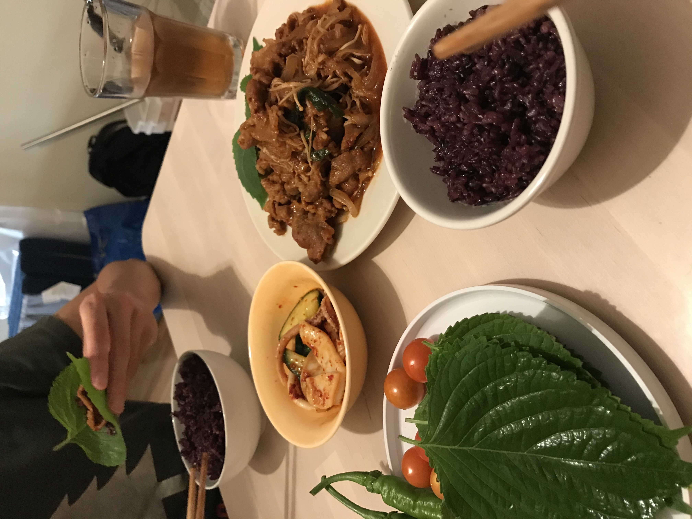

We went to get groceries at Hmart today. We came home thinking about bulgogi dinner.
For gochujang bulgogi, I blended onion instead of using mirin and sugar to sweeten the yangnyum (marinating sauce). And it came out really sweet and kind. It felt like round. Also, it added nice thick consistency to the sauce. Hehe.
Another big hit was eojingeo chomuchim (오징어 초무침) with cucumber. "Eojingeo" means squid, "cho" means vinegar, and "muchim" is a mostly spicy, sweet and tangy salad-like side dish. I sliced cucumber about a quarter-inch thick, then poured asazuke liquid, and kept it in the refridgerator for cold and crunch texture. Then I cleaned the fresh squid, removed the skin, and cut into strips. I blanched the squid quickly and rinsed it with cold water. I recommend doing the quick blanching no longer than 4 min to keep the tender texture of fresh squid.
Now it's time to combine the squid and cucumber together and marinate!
Put the squid and cucumber in a bowl. Add coarse gochugaru, vinegar, soy sauce, sesame oil, sesame seeds, lil sugar to the bowl.
Use your hand. Mix them rigorously. Ahhh... my tongue hurts while I'm writing this. I want it again!
Enjoy. So lovely cold summer side dish that you will love with rice or somen.
We loved our dinner. Especially making ssam (wrap, 쌈) bites with bulgogi and the kkannip (perilla leaves, 깻잎) from our garden
hit the spot. Omg. I will share my gochujang bulgogi recipe soon.
- Hee Je
